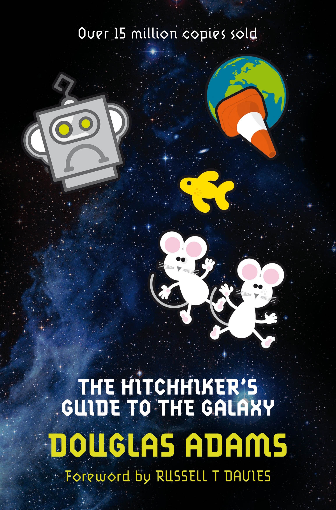

The Hitchhiker's Guide to the Galaxy (Book 1)
Synopsis
Seconds before the Earth is demolished to make way for a galactic freeway, Arthur Dent is plucked off the planet by his friend Ford Prefect, a researcher for the revised edition of The Hitchhiker's Guide to the Galaxy who, for the last fifteen years, has been posing as an out-of-work actor. Together this dynamic pair begin a journey through space aided by quotes from The Hitchhiker's Guide ("A towel is about the most massively useful thing an interstellar hitchhiker can have") and a galaxy-full of fellow travelers: Zaphod Beeblebrox--the two-headed, three-armed ex-hippie and totally out-to-lunch president of the galaxy; Trillian, Zaphod's girlfriend (formally Tricia McMillan), whom Arthur tried to pick up at a cocktail party once upon a time zone; Marvin, a paranoid, brilliant, and chronically depressed robot; Veet Voojagig, a former graduate student who is obsessed with the disappearance of all the ballpoint pens he bought over the years. Where are these pens? Why are we born? Why do we die? Why do we spend so much time between wearing digital watches? For all the answers stick your thumb to the stars. And don't forget to bring a towel!
Download PDF